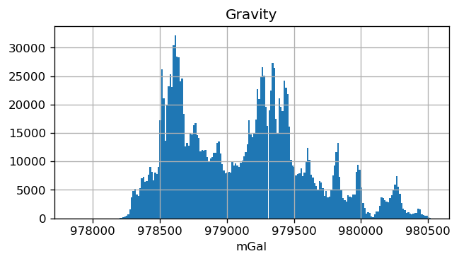
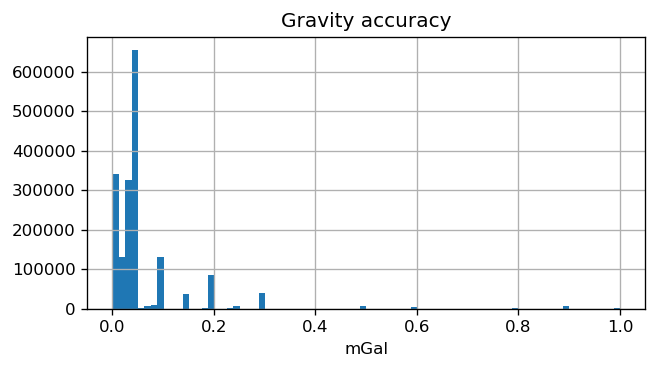
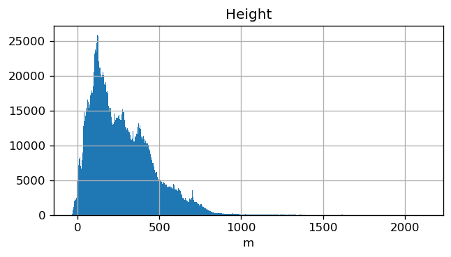
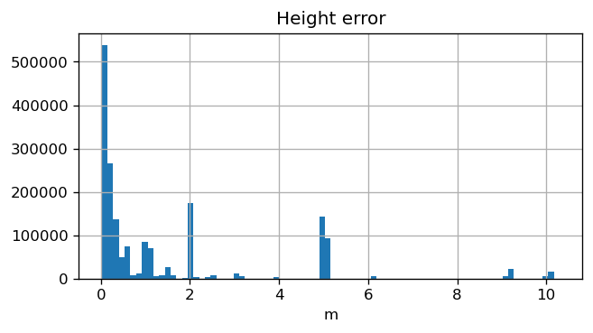
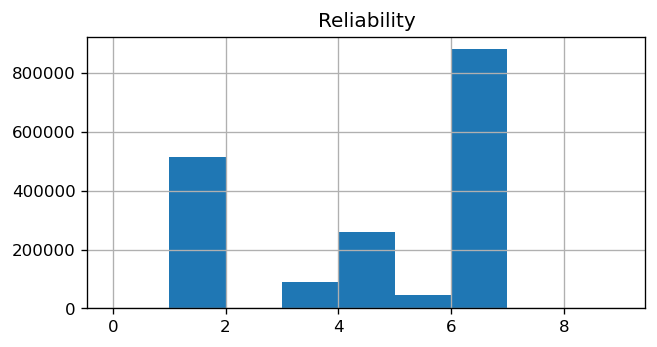

Using Jupyter notebooks
Plot and explore the data
Make some plots and maps to see what the data look like.
For this, we'll use the combined dataset generated by merge.ipynb.
from pathlib import Path
import matplotlib.pyplot as plt
import xarray as xr
import numpy as np
import pygmt
import pooch
import verde as vd
import boule as bl
plt.rc("figure", dpi=120)
pygmt.config(FONT="14p,Helvetica,black")
<pygmt.modules.config at 0x7ff10e78a520>
fig_dir = Path("..") / "figures"
Load the data
Download the data from the GitHub release using Pooch and then read the netCDF file. The download only happens once and is then cached by Pooch for later use in any other project.
fname = pooch.retrieve(
url="doi:10.6084/m9.figshare.13643837/australia-ground-gravity.nc",
known_hash="md5:16c94a792003714efee2bdb4f3181d3a",
downloader=pooch.DOIDownloader(progressbar=True),
)
data = xr.load_dataset(fname)
data
<xarray.Dataset> Dimensions: (point: 1789365) Coordinates: longitude (point) float64 138.6 138.6 138.8 ... 132.4 139.1 137.4 latitude (point) float64 -31.12 -31.13 -31.09 ... -25.5 -21.08 height (point) float32 515.111 470.832 ... 103.871 256.027 Dimensions without coordinates: point Data variables: gravity (point) float32 979314.8 979322.0 ... 978956.9 978629.1 gravity_accuracy (point) float32 0.19999999 0.19999999 ... 0.19999999 height_error (point) float32 10.06 10.06 10.06 ... 6.1600003 6.1600003 reliability_index (point) uint8 1 1 1 1 1 1 1 1 1 1 ... 4 4 4 4 4 4 4 4 4 4 survey_id (point) uint32 195951 195951 195951 ... 196111 196111 Attributes: Conventions: CF-1.8 title: Compilation of gravity ground surveys for Australia institution: Commonwealth of Australia (Geoscience Australia) crs: WGS84 source: Compiled from the collection by Wynne, P. 2018. NetCDF Grou... uuid: d6e3c3a8-5a20-4d8b-afca-e55f754e4ce1 license: Creative Commons Attribution 4.0 International Licence references: https://doi.org/10.6084/m9.figshare.13643837 history: 2021-08-24 (v2.0): Redownloaded and compiled the collection...
- point: 1789365
- longitude(point)float64138.6 138.6 138.8 ... 139.1 137.4
- long_name :
- longitude
- standard_name :
- longitude
- units :
- degrees_east
- actual_range :
- [105.930085 153.61476 ]
array([138.620497, 138.612697, 138.755195, ..., 132.41628 , 139.114555, 137.439533])
- latitude(point)float64-31.12 -31.13 ... -25.5 -21.08
- long_name :
- latitude
- standard_name :
- latitude
- units :
- degrees_north
- actual_range :
- [-43.735188 -6.12522 ]
array([-31.117129, -31.128329, -31.094027, ..., -24.560232, -25.496838, -21.080187])
- height(point)float32515.111 470.832 ... 103.871 256.027
- long_name :
- geometric height
- standard_name :
- height_above_reference_ellipsoid
- units :
- m
- actual_range :
- [ -39.248 2127.576]
- description :
- height above the WGS84 ellipsoid
- ancillary_variables :
- height_error
array([515.111, 470.832, 541.833, ..., 565.008, 103.871, 256.027], dtype=float32)
- gravity(point)float32979314.8 979322.0 ... 978629.1
- long_name :
- gravity acceleration
- units :
- mGal
- actual_range :
- [977847. 980522.6]
- ancillary_variables :
- gravity_accuracy reliability_index
- description :
- magnitude of the gravity acceleration vector
array([979314.8, 979322. , 979303.9, ..., 978721.3, 978956.9, 978629.1], dtype=float32)
- gravity_accuracy(point)float320.19999999 ... 0.19999999
- long_name :
- accuracy of gravity acceleration
- units :
- mGal
- actual_range :
- [9.999999e-04 1.000000e+00]
- description :
- accuracy of the magnitude of the gravity acceleration vector
array([0.19999999, 0.19999999, 0.19999999, ..., 0.19999999, 0.19999999, 0.19999999], dtype=float32)
- height_error(point)float3210.06 10.06 ... 6.1600003 6.1600003
- long_name :
- geometric height error
- units :
- m
- actual_range :
- [ 0.02 10.3 ]
- description :
- error in the height above the WGS84 ellipsoid
array([10.06 , 10.06 , 10.06 , ..., 6.1600003, 6.1600003, 6.1600003], dtype=float32)
- reliability_index(point)uint81 1 1 1 1 1 1 1 ... 4 4 4 4 4 4 4 4
- long_name :
- station reliability
- standard_name :
- status_flag
- description :
- estimate of gravity station reliability
- flag_values :
- [0 1 2 3 4 5 6 7 8 9]
- flag_meanings :
- unreliable_data_which_should_not_be_used_pending_remedial_action insufficient_information_to_accurately_classify_but_still_regarded_as_reliable_data poorly_controlled_data_which_should_be_used_cautiously data_with_weak_gravity_position_and_elevation_control data_with_moderate_gravity_position_and_elevation_control documented_gravity_ties_levelled_elevations_and_accurately_scaled_positions a_point_occupied_once_with_well_defined_position_and_elevation multiple_occupations_at_a_point_with_well_defined_position_and_elevation multiple_measurements_at_a_point_with_accurate_position_and_elevation data_measured_numerous_times_with_absolute_geodetic_or_first_order_precision
array([1, 1, 1, ..., 4, 4, 4], dtype=uint8)
- survey_id(point)uint32195951 195951 ... 196111 196111
- long_name :
- survey identification number
- description :
- unique numerical identifier of the survey to which each point belongs
array([195951, 195951, 195951, ..., 196111, 196111, 196111], dtype=uint32)
- Conventions :
- CF-1.8
- title :
- Compilation of gravity ground surveys for Australia
- institution :
- Commonwealth of Australia (Geoscience Australia)
- crs :
- WGS84
- source :
- Compiled from the collection by Wynne, P. 2018. NetCDF Ground Gravity Point Surveys Collection. Geoscience Australia, Canberra. https://doi.org/10.26186/5c1987fa17078
- uuid :
- d6e3c3a8-5a20-4d8b-afca-e55f754e4ce1
- license :
- Creative Commons Attribution 4.0 International Licence
- references :
- https://doi.org/10.6084/m9.figshare.13643837
- history :
- 2021-08-24 (v2.0): Redownloaded and compiled the collection to add the survey ID for each point. File P200441-point-gravity.nc was not accessible and so is left out of this version. 2020-10-28 (v1.0): Data with reliability index of 0 or 2 were removed from the compilation. Coordinates were converted to WGS84. Gravity was converted to mGal. Only absolute gravity, position, ellipsoid height and error measures were kept. Metadata was edited to follow CF conventions more closely.
Histograms
Look at the distribution of data values. This is helpful to make sure everything looks OK and we know the general trends in the data.
plt.figure(figsize=(6, 3))
plt.title("Gravity")
plt.hist(data.gravity.values, bins="auto")
plt.xlabel("mGal")
plt.grid()
plt.show()

plt.figure(figsize=(6, 3))
plt.title("Gravity accuracy")
plt.hist(data.gravity_accuracy.values, bins=80)
plt.xlabel("mGal")
plt.grid()
plt.show()

plt.figure(figsize=(6, 3))
plt.title("Height")
plt.hist(data.height.values, bins="auto")
plt.xlabel("m")
plt.grid()
plt.show()

plt.figure(figsize=(6, 3))
plt.title("Height error")
plt.hist(data.height_error.values, bins=80)
plt.xlabel("m")
plt.grid()
plt.show()

Some points seem to be below 0m ellipsoid height. This could cause problems for normal gravity calculation (it would be inside the ellipsoid and normal gravity equations are mostly valid outside only).
plt.figure(figsize=(6, 3))
plt.title("Reliability")
plt.hist(
data.reliability_index.values, bins=data.reliability_index.attrs["flag_values"]
)
plt.grid()
plt.show()

Most points are either 1 (insufficient_information_to_accurately_classify_but_still_regarded_as_reliable_data) or 6 (a_point_occupied_once_with_well_defined_position_and_elevation) so this is good.